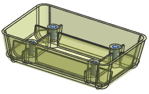
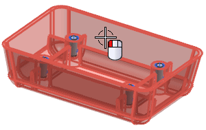
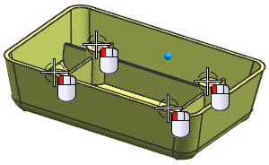
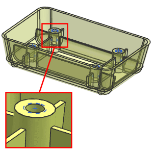

Subtract the positive holes
-
Hide the datum plane.

-
On the Feature toolbar, from the Combine Drop-down, select Subtract
 .
.
-
Select the extruded body for the target.

-
Select the four positive holes for the tools.

-
Click OK.

Each hole has the appropriate internal threads.
-
Close the part.